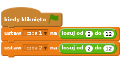
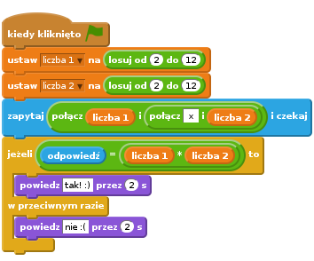
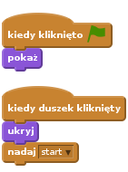
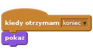
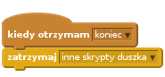
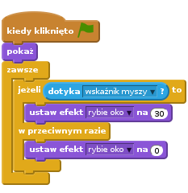
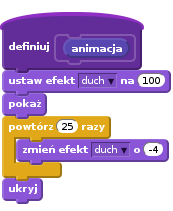
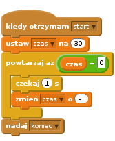

Heads Up!
This project is new. That means we’re still testing it, and there’s a small chance there could be some bugs or typos. If you’re a club leader trying out this project, please complete this short questionnaire (or email ) to let us know how it went!
Wstęp
Ten projekt nauczy cię, jak wykonać quiz z tabliczki mnożenia, w którym musisz poprawnie odpowiedzieć jak najwięcej razy w ciągu 30 sekund.

Krok 1: Przygotowanie pytań
Zacznijmy od przygotowania losowych pytań, na które będzie odpowiadał gracz.
Zadania do wykonania
Stwórz nowy projekt i usuń duszka-kota, aby projekt był pusty.
Wybierz postać i tło dla swojej gry. Możesz wybrać co tylko ci się podoba! Na przykład:

Stwórz dwie nowe zmienne i nazwij je
liczba 1iliczba 2. Zmienne te będą przechowywać dwie liczby, które będziemy przez siebie mnożyć.
Dodaj poniższy kod do swojej postaci, aby ustawić każdej zmiennej
losowąliczbę od 2 do 12.
Teraz możesz zapytać gracza i powiedzieć mu, czy udzielił poprawnej odpowiedzi.

Przetestuj całość odpowiadając na jedno pytanie poprawnie i na jedno niepoprawnie.
Cały kod umieść w nowym bloku
zawszew taki sposób, by gracz odpowiadał w kółko na pytania.Dodaj na scenie stoper używając do tego nowej zmiennej
czas. Jeśli potrzebujesz pomocy możesz zajrzeć do instrukcji z projektu “Balony” (krok 6), gdzie robiliśmy stoper.Przetestuj jeszcze raz swój projekt - twoja postać powinna przestać zadawać pytania, kiedy czas się skończy.
Zapisz swój projekt
Wyzwanie: Zmiana kostiumów
Czy możesz zmienić kostium swojej postaci w taki sposób, by pasował do odpowiedzi gracza?

Wyzwanie: Dodanie punktacji
Czy możesz dodać punkty do swojej gry? Możesz dodawać jeden punkt za każdą poprawną odpowiedź. Jeśli chcesz być złośliwy, możesz nawet zerować punkty, jeśli gracz poda złą odpowiedź.
Zapisz swój projekt
Krok 2: Wiele gier
Dodaj do swojej gry przycisk “Start”, abyś mógł uruchomić grę wiele razy.
Zadania do wykonania
Dodaj duszka-przycisk “Start”, w który gracz będzie klikał, aby uruchomić nową grę. Przycisk możesz narysować sam lub zmienić jeden ze biblioteki Scratcha.

Dodaj poniższy kod do przycisku:

Ten kod pokazuje przycisk w momencie, gdy uruchomisz projekt. Kiedy gracz w niego kliknie przycisk jest ukrywany, a następnie nadawana jest wiadomość, by włączyć grę.
Musisz teraz zmienić kod swojej postaci tak, by uruchamiała grę kiedy otrzyma wiadomość
start, a nie kiedy kliknięto flagę.Zamień blok
kiedy kliknięto zieloną flagęnakiedy otrzymam start.
Kliknij na zieloną flagę, a następnie na nowy przycisk “Start”, aby przetestować całość. Gra powinna się zacząć dopiero po kliknięciu na przycisk.
Czy zauważyłeś, że stoper startuje kiedy klikniesz zieloną flagę, a nie w momencie, kiedy gra się zaczyna?

Czy potrafisz naprawić ten błąd?
Kliknij na scenę i zamień blok
zatrzymaj wszystkona wysłanie wiadomościkoniec.
Teraz możesz dodać kod do przycisku, by ponownie pokazał się na koniec każdej gry.

Twoja postać powinna także przestać zadawać pytania, kiedy gra się skończyła:

Przetestuj przycisk “Start” grając kilka razy. Przycisk powinien pokazać się po każdej grze. Aby ułatwić sobie testowanie możesz skrócić czas gry do kilku sekund.
Możesz także zmienić wygląd przycisku, kiedy kursor myszy znajdzie się nad nim.


Zapisz swój projekt
Wyzwanie: Ekran początkowy
Możesz dodać inne tło do sceny, które będzie ekranem początkowym gry. Do przełączania pomiędzy tłami możesz użyć bloków kiedy otrzymam start i kiedy otrzymam koniec.
Możesz także pokazywać i ukrywać swoją postać, a nawet pokazywać i ukrywać stoper używając poniższych bloków:

Zapisz swój projekt
Krok 3: Dodawanie elementów graficznych
Do tej pory postać w grze informowała gracza jak mu idzie mówiąc “tak! :)” lub “nie :(”. Zmieńmy to i dodajmy elementy graficzne, po których gracz będzie widział, czy udzielił poprawnej odpowiedzi.
Dodaj nowego duszka i nazwij go “Wynik”. Duszek powinien mieć dwa kostiumy “ptaszek” i “krzyżyk”.

Zmień kod postaci tak, by zamiast mówić graczowi, jak mu poszło, nadawał zamiast tego wiadomość
dobrzelubźle.
Możesz teraz wykorzystać te wiadomości do pokazywania odpowiedniego kostiumu - “ptaszka” lub “krzyżyka”. Dodaj ten kod do duszka “Wynik”:

Przetestuj grę jeszcze raz. Teraz kiedy odpowiesz poprawnie powinieneś zobaczyć ptaszka, a gdy odpowiesz źle - krzyżyk.

Czy zauważyłeś, że kod w bloku
kiedy otrzymam dobrzeikiedy otrzymam źlejest niemal identyczny? Utwórzmy funkcję, aby wprowadzanie zmian w tym kodzie było łatwiejsze.Będąc na duszku “Wynik” kliknij w
Więcej bloków, a następnie “Stwórz blok”. Nową funkcję nazwijanimacja.
Teraz możesz dodać kod animacji do twojej nowej funkcji, a następnie użyć jej w dwóch miejscach:

Od tej chwili, jeśli będziesz chciał pokazać znaczek ptaszka lub krzyżyk dłużej lub krócej wystarczy, że zmienisz jedno miejsce w swoim kodzie. Spróbuj!
Możesz zmienić funkcję animacji w taki sposób, aby zamiast po prostu pokazywać znaczek ptaszka lub krzyżyk, obie grafiki płynnie pojawiały się.

Zapisz swój projekt
Wyzwanie: Podrasowana animacja
Czy możesz sprawić, żeby animacja była jeszcze bardziej efektowna? Mógłbyś zmienić kod w taki sposób by poza pojawianiem się, znikanie także było płynne. Możesz wypróbować także inne fajne efekty:

Zapisz swój projekt
Wyzwanie: Dźwięk i muzyka
Czy możesz dodać efekty dzwiękowe i muzykę do swojej gry? Na przykład:
- Zagrać dźwięk kiedy gracz wpisze poprawną lub błędną odpowiedź;
- Dodać dźwięk do zegara (tik-tak);
Zagrać dźwięk kiedy skończy się czas;
Mógłbyś także ciągle odtwarzać muzykę w pętli (jeśli nie jesteś pewien, jak to zrobić zajrzyj do kroku 4 projektu “Rock Band”).
Zapisz swój projekt
Wyzwanie: Zbierz 10 punktów
Możesz zmienić swoją grę w taki sposób, by zamiast odpowiadzieć poprawnie na jak najwięcej pytań w 30 sekund, gracz musiał odpowiedzieć poprawnie na 10 pytań tak szybko, jak potrafi.
Aby to zrobić wystarczy, że zmienisz kod stopera. Czy widzisz, co trzeba zmienić?

Zapisz swój projekt
Wyzwanie: Ekran z instrukcją
Czy możesz dodać ekran z instrukcją, na którym pokażesz graczowi, jak może grać? Będziesz potrzebować przycisku “Instrukcja” i kolejnego tła sceny.

Możesz też potrzebować przycisku “Wstecz”, aby wrócić z powrotem do głównego menu.